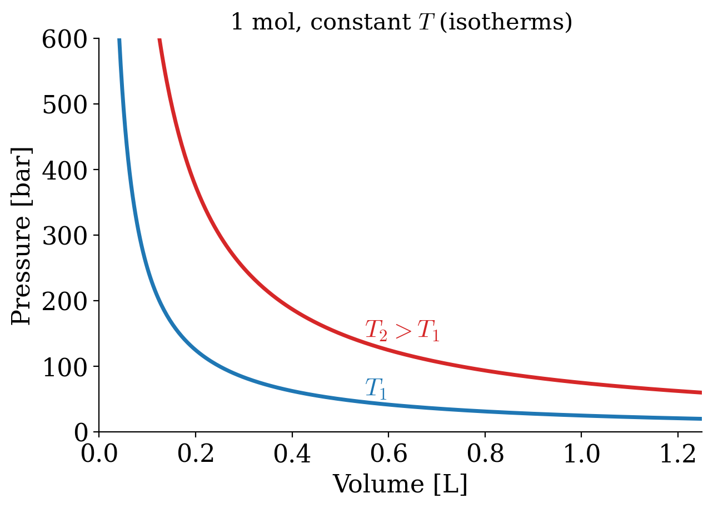
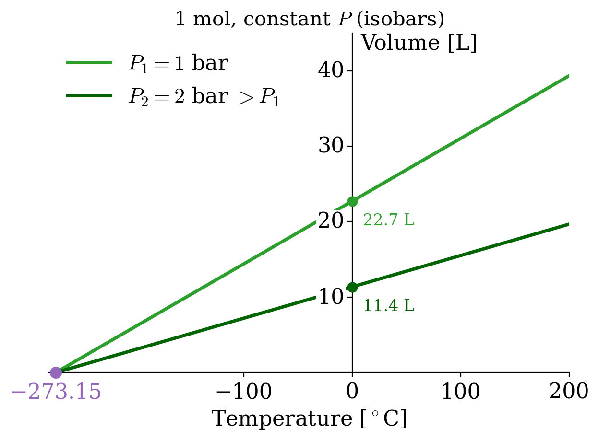
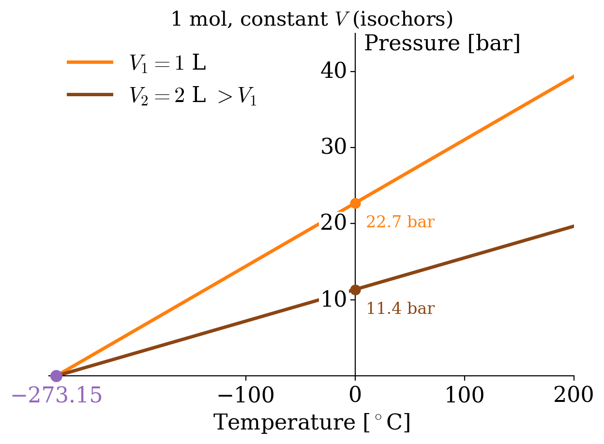
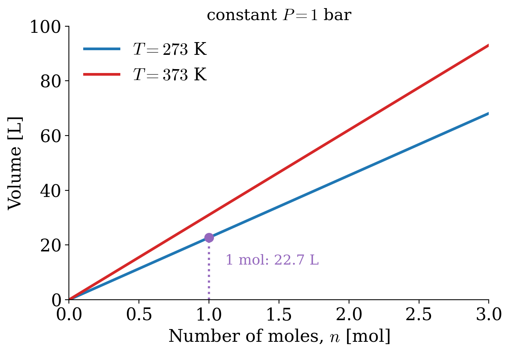
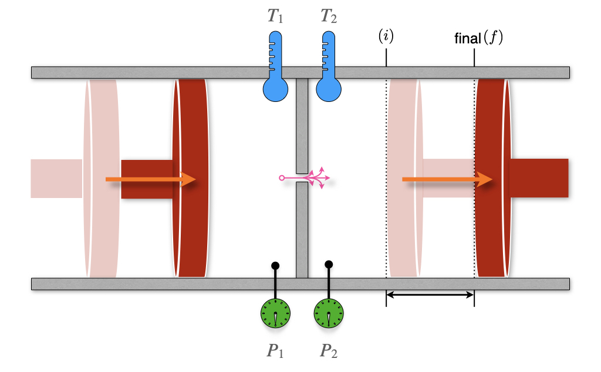
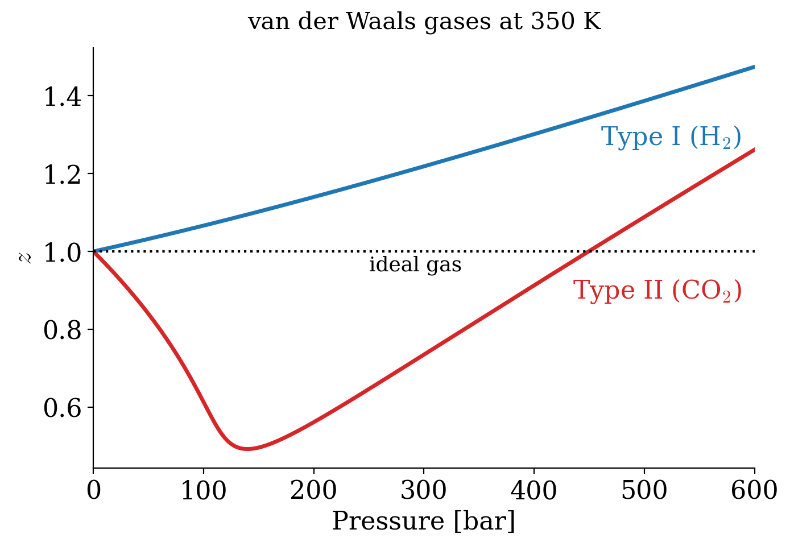
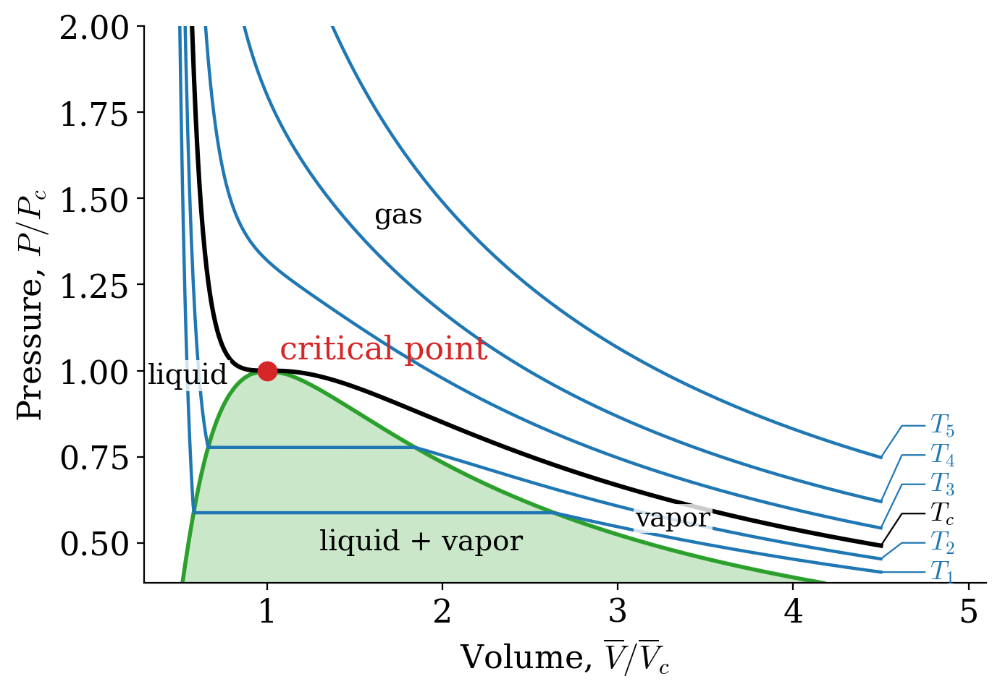

11 Ideal and Non-Ideal Gases
Up to this point, we have used the ideal gas as our main example, and in chapter 10 we wrote equilibrium constants in terms of the partial pressures of ideal gases. Real gases, however, are not ideal: their molecules occupy some space, and they attract each other. In this chapter, we will first look back at how the ideal gas law was discovered, and then we will study what happens when its assumptions break down. We will see that non-ideal behavior is responsible for some very useful phenomena, such as the cooling of a gas when it expands and the liquefaction of gases, and we will introduce the fugacity, a quantity that allows us to keep using our thermodynamic formulas for non-ideal gases.
11.1 The Ideal Gas Equation
The concept of an ideal gas is a theoretical construct that allows for straightforward treatment and interpretation of gases’ behavior. As such, the ideal gas is a simplified model that we use to understand nature, and it does not correspond to any real system. In typical “spherical cow” spirit, the ideal gas model strips away many real-world complications so we can focus on the core relationships between pressure, volume, temperature, and amount of gas. The following two assumptions define the ideal gas model:
Definition 11.1
- The particles that compose an ideal gas do not occupy any volume.
- The particles that compose an ideal gas do not interact with each other.
Because of its simplicity, the ideal gas model has been the historical foundation of thermodynamics and of science in general. The first studies of the ideal gas behavior date back to the seventeenth century, and the scientists that performed them are among the founders of modern science.
11.1.1 Boyle’s Law
In 1662 Robert Boyle (1627–1691) found that the pressure and the volume of an ideal gas are inversely related at constant temperature. Boyle’s Law has the following mathematical description:
\[ P\propto\frac{1}{V}\quad\text{at const.}\;T, \tag{11.1}\]
or, in other terms:
\[ PV=k_1\quad\text{at const.}\;T, \tag{11.2}\]
which results in the familiar \(PV\) plots of Figure 11.1. As we already discussed in chapter 2, each of the curves in Figure 11.1 is obtained at constant temperature, and it is therefore called “isotherm.”

11.1.2 Charles’s and Gay-Lussac’s Laws
It took scientists more than a century to expand Boyle’s work and study the relationship between volume and temperature. In 1787 Jacques Alexandre César Charles (1746–1823) wrote the relationship known as Charles’s Law:
\[ V\propto T\quad\text{at const.}\;P, \tag{11.3}\]
or, in other terms:
\[ V=k_2 T\quad\text{at const.}\;P, \tag{11.4}\]
which results in the plots of Figure 11.2. Each of the curves is obtained at constant pressure, and it is termed “isobar.”

The interesting thing about isobars is that each line seems to converge to a specific point along the temperature line when we extrapolate them to \(V\rightarrow 0\). This led to the introduction of the absolute temperature scale, suggesting that the temperature will never get smaller than \(-273.15^\circ\mathrm{C}\).
It took an additional 21 years to write a formal relationship between pressure and temperature. The following relationships were proposed by Joseph Louis Gay-Lussac (1778–1850) in 1808:
\[ P\propto T\quad\text{at const.}\;V, \tag{11.5}\]
or, in other terms:
\[ P=k_3 T\quad\text{at const.}\;V, \tag{11.6}\]
which results in the plots of Figure 11.3. Each of the curves is obtained at constant volume, and it is termed “isochor.”

11.1.3 Avogadro’s Law
Three years later, in 1811, Amedeo Avogadro (1776–1856) discovered a seemingly unrelated principle by studying the composition of matter. His Avogadro’s Law encodes the relationship between the number of moles in an ideal gas and its volume as:
\[ V\propto n\quad\text{at const.}\;P,T, \tag{11.7}\]
or in other terms:
\[ V=k_4 n\quad\text{at const.}\;P,T, \tag{11.8}\]
which results in the straight lines of Figure 11.4.

11.1.4 The ideal gas Law
Despite all of the ingredients being available for more than 20 years, it’s only in 1834 that Benoît Paul Émile Clapeyron (1799–1864) was finally able to combine them into what is now known as the ideal gas Law. Using the same formulas obtained above, we can write:
\[ PV=\underbrace{k_3 T}_{\text{from Gay-Lussac's}} \cdot \underbrace{k_4 n,}_{\text{from Avogadro's}} \tag{11.9}\]
which by renaming the product of the two constants \(k_3\) and \(k_4\) as \(R\), becomes:
\[ PV=nRT \tag{11.10}\]
The value of the constant \(R\) can be determined experimentally by measuring the volume that 1 mol of an ideal gas occupies at a constant temperature (e.g., at \(T=0^\circ\mathrm{C}\)) and a constant pressure (e.g., atmospheric pressure \(P=1\;\mathrm{atm}\)). At those conditions, the volume is measured at 22.4 L, resulting in the following value of \(R\):
\[ R=\frac{VP}{nT}=\frac{22.4 \cdot 1}{1 \cdot 273}=0.082 \;\frac{\text{L atm}}{\text{mol K}}, \tag{11.11}\]
which a simple conversion to SI units transforms into:
\[ R=8.31\;\frac{\text{J}}{\text{mol K}}. \tag{11.12}\]
11.2 Behaviors of Non-Ideal Gases
Non-ideal gases (sometimes also referred to as “real gases”), do not behave as ideal gases because at least one of the assumptions in definition 11.1 is violated. What characterizes non-ideal gases is that there is no unique equation that we can use to describe their behavior. For this reason, we have a plethora of several experimental models, none of which is superior to the other. The van der Waals (vdW) equation is the only model that we will analyze in detail because of its simple interpretation. However, it is far from universal, and for several non-ideal gases, it is severely inaccurate. Other popular non-ideal gas equations are the Clausius equation, the virial equation, the Redlich–Kwong equation and several others.1
11.2.1 The van der Waals equation
One of the simplest empirical equations that describe non-ideal gases was obtained in 1873 by Johannes Diderik van der Waals (1837–1923). The vdW equation includes two empirical parameters (\(a\) and \(b\)) with different values for different non-ideal gases. Each of the parameters corresponds to a correction for the breaking of one of the two conditions that define the ideal gas behavior (definition 11.1). The vdW equation is obtained from the ideal gas equation performing the following simple substitutions:
\[ \begin{aligned} P & \;\rightarrow\;\left( P + \frac{a}{\overline{V}^2} \right)\\ \overline{V} & \;\rightarrow\;\left( \overline{V} - b\right),\\ \end{aligned} \tag{11.13}\]
which results in:
\[ \begin{aligned} P\overline{V} &=RT \; \rightarrow \; \left( P + \frac{a}{\overline{V}^2} \right)\left( \overline{V} - b\right)=RT\\ P &=\frac{RT}{\overline{V} - b}-\frac{a}{\overline{V}^2}. \end{aligned} \tag{11.14}\]
The parameter \(a\) accounts for the presence of intermolecular interactions, while the parameter \(b\) accounts for the non-negligible volume of the gas molecules. Despite the parameters having simple interpretations, their values for each gas must be determined experimentally. Values for these parameters for some significant non-ideal gases are reported below:
| \(a \left[ \frac{\mathrm{L}^2\mathrm{bar}}{\mathrm{mol}^2} \right]\) | \(b \left[ \frac{\mathrm{L}}{\mathrm{mol}} \right]\) | |
|---|---|---|
| Ammonia | 4.225 | 0.0371 |
| Argon | 1.355 | 0.03201 |
| Carbon dioxide | 3.640 | 0.04267 |
| Carbon monoxide | 1.505 | 0.03985 |
| Chlorine | 6.579 | 0.05622 |
| Freon | 10.78 | 0.0998 |
| Helium | 0.0346 | 0.0238 |
| Hydrogen | 0.2476 | 0.02661 |
| Mercury | 8.200 | 0.01696 |
| Methane | 2.283 | 0.04278 |
| Neon | 0.2135 | 0.01709 |
| Nitrogen | 1.370 | 0.0387 |
| Oxygen | 1.382 | 0.03186 |
| Radon | 6.601 | 0.06239 |
| Xenon | 4.250 | 0.05105 |
11.2.2 Joule–Thomson effect

We have already met William Thomson, also known as Lord Kelvin, and his seminal work on the second law of thermodynamics. In conjunction with that work, Thomson is famous for developing a sensitive method for measuring the temperature changes related to the expansion of a gas. These experiments improved on the earlier work by James Joule, and Lord Kelvin’s improved instrument depicted in Figure 11.5 is named the Joule–Thomson apparatus. The apparatus is composed of two chambers, each with its own mobile piston. The chambers are connected via a valve or a porous plug. The entire equipment is also thermally isolated from the surroundings. This instrument is a more sensitive version of the Joule expansion apparatus that we already described in chapter 3 (compare with Figure 3.1).
Thomson realized that a gas flowing through an obstruction experiences a drop in pressure. If the entire apparatus is insulated, it will not exchange heat with its surroundings (\(Q=0\)), and each transformation will happen at adiabatic conditions. Let’s consider an initial condition with 1 mol of gas in the left chamber, occupying a volume \(V_l\), and a completely closed right chamber, for which \(V_r^i=0\). After the process completes, the volume of the left chamber will reduce to \(V_l^f=0\), while the volume of the right chamber will be \(V_r\). Using the first law of thermodynamics, we can write:
\[ \Delta U=U_r-U_l=\underbrace{Q}_{=0}+W=W_l+W_r, \tag{11.15}\]
with:
\[ \begin{aligned} W_l &=-\int_{V_l}^0 P_l dV = P_l V_l\\ W_r &=-\int_0^{V_r} P_r dV = - P_r V_r. \end{aligned} \tag{11.16}\]
Replacing eq. 11.16 into eq. 11.15, results in:
\[ \begin{aligned} U_r-U_l &=P_l V_l-P_r V_r \\ \underbrace{U_r+P_r V_r}_{H_r} &= \underbrace{U_l + P_l V_l}_{H_l}, \end{aligned} \tag{11.17}\]
which, replacing the definition of enthalpy \(H=U+PV\), we obtain:
\[ \begin{aligned} H_r &=H_l \\ \Delta H &=0, \end{aligned} \tag{11.18}\]
or, in other words, the process is isenthalpic. Using the total differential of \(H\):
\[ dH=\left(\frac{\partial H}{\partial T} \right)_P dT + \left(\frac{\partial H}{\partial P} \right)_T dP = C_P dT + \left(\frac{\partial H}{\partial P} \right)_T dP, \tag{11.19}\]
we obtain:
\[ \Delta H=\int dH = \int C_P dT + \int \left(\frac{\partial H}{\partial P} \right)_T dP =0, \tag{11.20}\]
or, in purely differential form:
\[ dH = C_P dT + \left(\frac{\partial H}{\partial P} \right)_T dP =0. \tag{11.21}\]
From eq. 11.21 we can define a new coefficient, called the Joule–Thomson coefficient, \(\mu_{\mathrm{JT}}\), that measures the rate of change of temperature of a gas with respect to pressure in the Joule–Thomson process:
\[ \mu_{\mathrm{JT}}=\left( \frac{\partial T}{\partial P} \right)_H=-\frac{1}{C_P} \left( \frac{\partial H}{\partial P} \right)_T. \tag{11.22}\]
The value of \(\mu_{\mathrm{JT}}\) depends on the type of gas, the temperature and pressure before expansion, and the heat capacity at constant pressure of the gas. The temperature at which \(\mu_{\mathrm{JT}}\) changes sign is called the “Joule–Thomson inversion temperature.” Since the pressure decreases during an expansion, \(\partial P\) is negative by definition, and the following possibilities are available for \(\mu_{\mathrm{JT}}\):
| Gas temperature: | \(\partial P\) | \(\mu_{\mathrm{JT}}\) | \(\partial T\) | The gas will: |
|---|---|---|---|---|
| Below the inversion temperature | – | + | – | cool |
| Above the inversion temperature | – | – | + | warm |
For example, helium has a very low Joule–Thomson inversion temperature at standard pressure \((T=45\;\text{K})\), and it warms when expanded at constant enthalpy at typical room temperatures. The only other gases that have standard inversion temperature lower than room temperature are hydrogen and neon. On the other hand, nitrogen and oxygen have high inversion temperatures (\(T=621\;\text{K}\) and \(T=764\;\text{K}\), respectively), and they both cool when expanded at room temperature. Therefore, it is possible to use the Joule–Thomson effect in refrigeration processes such as air conditioning.2 As we already discussed in chapter 3, the temperature of an ideal gas stays constant in an adiabatic expansion, therefore its Joule–Thomson coefficient is always equal to zero.
11.3 Critical Phenomena
11.3.1 Compressibility factors
The compressibility factor is a correction coefficient that describes the deviation of a real gas from ideal gas behavior. It is usually represented with the symbol \(z\), and is calculated as:
\[ z=\frac{\overline{V}}{\overline{V}_{\text{ideal}}} = \frac{P \overline{V}}{RT}. \tag{11.23}\]
It is evident from eq. 11.23 that the compressibility factor is dependent on the pressure, and for an ideal gas \(z=1\) always. For a non-ideal gas at any given pressure, \(z\) can be higher or lower than one, separating the behavior of non-ideal gases into two possibilities. The dependence of the compressibility factor against pressure is represented for \(\mathrm{H}_2\) and \(\mathrm{CO}_2\) in Figure 11.6.

The two types of possible behaviors are differentiated based on the compressibility factor at \(P\rightarrow 0\). To analyze these situations we can use the vdW equation to calculate the compressibility factor as:
\[ z= \frac{\overline{V}}{RT} \left( \frac{RT}{\overline{V}-b} -\frac{a}{\overline{V}^2} \right), \tag{11.24}\]
which can be simplified as \(z=\frac{\overline{V}}{\overline{V}-b}-\frac{a}{RT\overline{V}}\). We are interested in what happens at low pressure, where the molar volume is very large compared to \(b\). In this case, we can use the approximation \(\frac{\overline{V}}{\overline{V}-b}=\frac{1}{1-b/\overline{V}} \approx 1+\frac{b}{\overline{V}}\), which gives:
\[ z \approx 1 + \frac{1}{\overline{V}}\left(b-\frac{a}{RT}\right) \approx 1 + \frac{P}{RT}\left(b-\frac{a}{RT}\right), \tag{11.25}\]
where in the last step we used the ideal gas law, \(\frac{1}{\overline{V}} \approx \frac{P}{RT}\), which is a good approximation at low pressure. Eq. 11.25 is a straight line in \(P\), and its slope gives the behavior of the compressibility factor near \(P=0\):
\[ \left. \left( \frac{\partial z}{\partial P}\right)_T \right|_{P=0} = \frac{1}{RT} \left( b -\frac{a}{RT} \right), \tag{11.26}\]
which is then interpreted as follows:
- Type I gases: \(b>\frac{a}{RT} \; \Rightarrow \; \frac{\partial z}{\partial P} > 0\) molecular size dominates (\(\mathrm{H}_2-\)like behavior).
- Type II gases: \(b<\frac{a}{RT} \; \Rightarrow \; \frac{\partial z}{\partial P} < 0\) attractive forces dominate (\(\mathrm{CO}_2-\)like behavior).
The dependence of the compressibility factor as a function of temperature (Figure 11.7) results in different plots for each of the two types of behavior.

Both type I and type II non-ideal gases will approach the ideal gas behavior as \(T\rightarrow \infty\), because \(\frac{1}{RT}\rightarrow 0\) as \(T\rightarrow \infty\). For type II gases, there are three interesting situations:
- At low \(T\): \(b<\frac{a}{RT} \; \Rightarrow \; \frac{\partial z}{\partial P} < 0,\) which is the behavior described above.
- At high \(T\): \(b>\frac{a}{RT} \; \Rightarrow \; \frac{\partial z}{\partial P} > 0,\) which is the same behavior of type I gases.
- At a very specific temperature, inversion will occur (i.e., at \(T=713 \; \mathrm{K}\) for \(\mathrm{CO}_2\)). This temperature is called the Boyle temperature, \(T_{\mathrm{B}}\), and is the temperature at which the attractive and repulsive forces balance out. It can be calculated from the vdW equation, since \(b-\frac{a}{RT_{\mathrm{B}}}=0 \; \Rightarrow \; T_{\mathrm{B}}=\frac{a}{bR}.\) At the Boyle temperature a type II gas shows ideal gas behavior over a large range of pressure.
11.3.2 Phase diagram of a non-ideal gas

Let’s now turn our attention to the \(PV\) phase diagram of a non-ideal gas, reported in Figure 11.8. We can start the analysis from an isotherm at a high temperature. Since every gas will behave as an ideal gas at those conditions, the corresponding isotherms will look similar to those of an ideal gas (\(T_5\) and \(T_4\) in Figure 11.8). Lowering the temperature, we start to see the deviation from ideality getting more prominent (\(T_3\) in Figure 11.8) until we reach a particular temperature called the critical temperature, \(T_c\).
Definition 11.2 Critical Temperature: The temperature above which no appearance of a second phase is observed, regardless of how high the pressure becomes.
At the critical temperature and below, the gas liquefies when the pressure is increased. For this reason, the liquefaction of a gas is called a critical phenomenon.
The critical temperature is the coordinate of a unique point, called the critical point, that can be visualized in the three-dimensional \(T,P,V\) diagram of each gas (a surface whose slices at constant temperature are the isotherms of Figure 11.8).
The critical point has coordinates \(\{T_c,P_c, \overline{V}_c\}\). These critical coordinates can be determined from the vdW equation at \(T_c\), as:
\[ T_c=\frac{8a}{27Rb} \qquad P_c=\frac{a}{27b^2} \qquad \overline{V}_c=3b. \tag{11.27}\]
These relations are used, in practice, to determine the vdW constants \(a,b\) from the experimentally measured critical isotherms.
The critical compressibility factor, \(z_c\), is predicted from the vdW equation at:
\[ z_c=\frac{P_c \overline{V}_c}{R T_c}=\left( \frac{a}{27b^2} \right) \left( \frac{3b}{R} \right) \left( \frac{27Rb}{8a} \right) = \frac{3}{8} = 0.375, \tag{11.28}\]
a value that is independent of the gas. Experimentally measured values of \(z_c\) for different non-ideal gases are in the range of 0.2–0.3. These values can be used to infer the accuracy of the vdW equation for each non-ideal gas. Since the experimental \(z_c\) is usually lower than the one calculated from the vdW equation, we can deduce that the vdW equation overestimates the critical molar volume.
Notice how slicing the \(PT\overline{V}\) diagram at constant \(T\) results in the \(PV\) diagram that we reported in Figure 11.8. On the other hand, slicing the \(PT\overline{V}\) diagram at constant \(\overline{V}\) results in a \(PT\) diagram, similar to the one that we will examine in detail in the next chapter.
11.4 Fugacity
The chemical potential of a pure ideal gas can be calculated using eq. 9.21. Since we are not interested in a mixture, we can drop the asterisk in \(\mu^*\), and rewrite eq. 9.21 as:
\[ \mu_{\text{ideal}} = \mu^\standardstate + RT \ln \frac{P}{P^\standardstate}. \tag{11.29}\]
For a non-ideal gas, the pressure cannot be used in eq. 11.29 because the response of each gas to changes in pressure is not universal. We can, however, define a new variable to replace the pressure in eq. 11.29 and call it fugacity (\(f\)).
Definition 11.3 Fugacity: The effective pressure of a non-ideal gas that corresponds to the pressure of an ideal gas with the same temperature and chemical potential of the non-ideal one.
Eq. 11.29 then becomes:
\[ \mu_{\text{non-ideal}} = \mu^\standardstate + RT \ln \frac{f}{P^\standardstate}. \tag{11.30}\]
To complete the definition of the fugacity, we need to decide how it relates to the pressure. At very low pressure, the molecules of any gas are so far apart that their volume and their interactions become negligible, and every gas behaves ideally. In this limit, the chemical potential of the non-ideal gas, eq. 11.30, must become equal to that of the ideal gas, eq. 11.29, which is possible only if the fugacity becomes equal to the pressure:
\[ \lim_{P\rightarrow 0} \frac{f}{P} = 1, \tag{11.31}\]
in other words, the fugacity is defined so that any non-ideal gas approaches the ideal gas behavior as \(P\rightarrow 0\). This condition, in conjunction with the \(T\rightarrow \infty\) behavior obtained in the previous section, results in the following statement:
The highest chances for any gas to behave ideally happen at high temperature and low pressure.
We can now return our attention to the definition of fugacity. Remembering that the chemical potential is the molar Gibbs energy of a substance, we can write:
\[ d \mu_{\text{ideal}} = \overline{V}_{\text{ideal}}dP, \tag{11.32}\]
and:
\[ d \mu_{\text{non-ideal}} = \overline{V}_{\text{non-ideal}}dP. \tag{11.33}\]
Subtracting eq. 11.32 from eq. 11.33, we obtain:
\[ d \mu_{\text{non-ideal}}-d \mu_{\text{ideal}} = \left(\overline{V}_{\text{non-ideal}}-\overline{V}_{\text{ideal}} \right) dP, \tag{11.34}\]
which we can then integrate between \(0\) and \(P\):
\[ \mu_{\text{non-ideal}}-\mu_{\text{ideal}} = \int_0^P \left(\overline{V}_{\text{non-ideal}}-\overline{V}_{\text{ideal}} \right) dP. \tag{11.35}\]
Using eq. 11.29 and eq. 11.30 we can then replace the definition of chemical potentials, resulting in:
\[ \ln f - \ln P = \frac{1}{RT} \int_0^P \left(\overline{V}_{\text{non-ideal}} - \overline{V}_{\text{ideal}} \right) dP, \tag{11.36}\]
which gives us a mathematical definition of the fugacity, as:
\[ f = P \cdot \underbrace{\exp\left[ \frac{1}{RT} \int_0^P \left(\overline{V}_{\text{non-ideal}}-\overline{V}_{\text{ideal}} \right) dP \right]}_{\text{fugacity coefficient, }\phi(T,P)}. \tag{11.37}\]
The exponential term in eq. 11.37 is complicated to write, but it can be interpreted as a coefficient—unique to each non-ideal gas—that can be measured experimentally. Such coefficients are dependent on pressure and temperature and are called the fugacity coefficients. Using letter \(\phi\) to represent the fugacity coefficient, we can rewrite eq. 11.37 as:
\[ f = \phi P, \tag{11.38}\]
which gives us a straightforward interpretation of the fugacity as an effective pressure. As such, the fugacity will have the same unit as the pressure, while the fugacity coefficients will be dimensionless.
As we already saw in chapter 10, the fugacity can be used to replace the pressure in the definition of the equilibrium constant for reactions that involve non-ideal gases. The new constant is usually called \(K_f\), and is obtained from:
\[ K_f=\prod_i f_{i,\text{eq}}^{\nu_i} = K_P \prod_i \phi_{i}^{\nu_i}. \tag{11.39}\]
11.5 Chapter Review
11.5.1 Study Questions
1. Which two assumptions define the ideal gas model?
- The particles are spheres, and they move slowly.
- The particles have the same mass, and they collide elastically.
- The particles do not occupy any volume, and they do not interact with each other.
- The particles are at rest, and they attract each other.
- The gas is at low temperature and high pressure.
2. How did Charles’s isobars lead to the idea of an absolute temperature scale?
- When extrapolated to zero volume, all isobars meet at the same temperature, \(-273.15\;^\circ\text{C}\).
- They show that the volume is constant.
- They are horizontal lines.
- They meet at 0 °C.
- They show that the pressure can be negative.
3. What does the parameter \(a\) in the van der Waals equation account for?
- The volume of the gas molecules.
- The temperature of the gas.
- The number of moles.
- The molar mass of the gas.
- The attractive interactions between the gas molecules.
4. What quantity stays constant in a Joule–Thomson expansion?
- The temperature.
- The enthalpy.
- The pressure.
- The volume.
- The internal energy.
5. When does a gas cool down in a Joule–Thomson expansion?
- Always.
- Never.
- Only if it is an ideal gas.
- When its temperature is below its inversion temperature (\(\mu_{\mathrm{JT}}>0\)).
- When its temperature is above its inversion temperature.
6. What is the compressibility factor of an ideal gas?
- \(z = 1\) at all conditions.
- \(z = 0\).
- \(z > 1\) at high pressure.
- \(z < 1\) at low temperature.
- \(z = 3/8\).
7. How is the Boyle temperature obtained from the van der Waals parameters?
- \(T_{\text{B}} = \frac{8a}{27Rb}\).
- \(T_{\text{B}} = \frac{bR}{a}\).
- \(T_{\text{B}} = \frac{a}{bR}\).
- \(T_{\text{B}} = \frac{a}{27b^2}\).
- \(T_{\text{B}} = 3b\).
8. What is the critical temperature of a gas?
- The temperature at which the gas freezes.
- The temperature at which the gas behaves ideally.
- The boiling temperature at 1 bar.
- The temperature at which the compressibility factor is zero.
- The temperature above which the gas cannot be liquefied, no matter how high the pressure.
9. The van der Waals equation predicts a critical compressibility factor \(z_c=3/8=0.375\), while experiments give 0.2–0.3. What does this tell us?
- That the experiments are wrong.
- That the van der Waals equation is only an approximate model.
- That all gases are ideal at the critical point.
- That the van der Waals equation is exact.
- That the critical point does not exist.
10. What is the value of the fugacity coefficient, \(\phi = f/P\), of any gas as \(P\rightarrow 0\)?
- Infinity.
- 3/8.
- It depends on the gas.
For more information on empirical equations for non-ideal gases see Wikipedia’s article on real gases.↩︎
Nitrogen and oxygen are the two most abundant gases in the air. A sequence of Joule–Thomson expansions is also used for the industrial liquefaction of air.↩︎